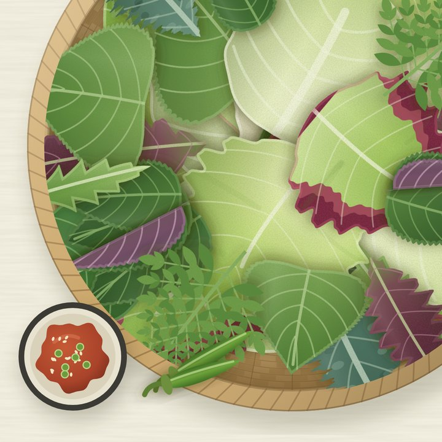
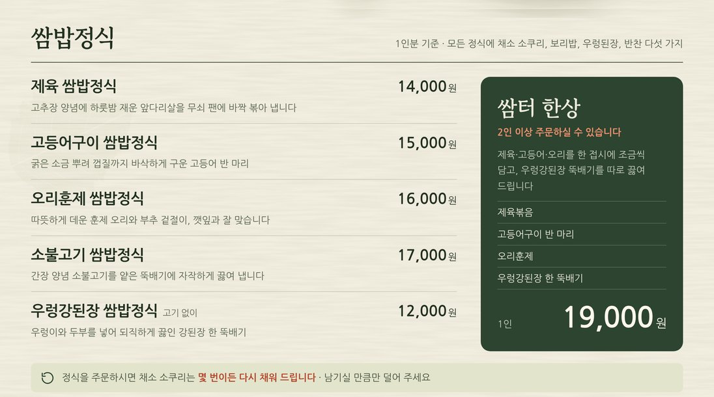

메뉴판 디자인 · SD-MN61
이 디자인으로 상담하기
쌈터 쌈밥정식 쌈채소 열두 가지를 대소쿠리째 내고 제육·고등어·오리훈제·우렁강된장을 곁들이는 쌈밥 정식집
A4 세로 · 1쪽 · 한국어 · 원화닥종이 아이보리 · 잎 그린 · 쌈장 주홍대소쿠리 탑뷰 쌈채소 일러스트
![쌈터 쌈밥정식 메뉴판 전체. 결이 보이는 닥종이 아이보리 바탕 왼쪽 위에 큰 붓글씨 같은 명조체로 쌈터, 그 아래 채소 열두 가지를 소쿠리째라는 부제와 짧은 소개, 오늘 소쿠리에 담기는 채소 열두 가지 이름 목록이 있습니다. 오른쪽 위에는 종이 밖으로 걸쳐 잘린 큰 대나무 소쿠리를 위에서 내려다본 그림이 있고, 물결 모양 청상추, 주름진 가장자리를 따라 붉은 자줏빛이 또렷한 적상추, 크기와 각도가 제각각이고 한두 장은 반으로 접혀 보랏빛 뒷면이 보이는 깻잎 묶음, 오글오글한 청록 케일, 깃털처럼 갈라진 쑥갓, 들쭉날쭉한 치커리, 굵은 흰 줄기의 근대와 청경채, 연노랑 알배추, 자주색 적겨자, 하트 모양 곰취, 연하고 매끈한 찐 양배추가 바닥이 거의 보이지 않게 겹겹이 담겨 있습니다. 소쿠리 아래에는 깨와 쪽파를 올린 쌈장 종지와 풋고추 두 개가 놓여 있습니다. 가운데에는 쌈밥정식 다섯 가지와 가격, 오른쪽 짙은 초록 상자에 쌈터 한상과 그 아래 주홍 글씨로 2인 이상 주문 안내, 1인 19,000원이 있고, 채소 소쿠리를 다시 채워 드린다는 안내, 더 올리기·곁들임·마실 것 세 칸 목록이 이어집니다. 맨 아래 짙은 초록 띠에 알레르기 안내, 영업시간, 자리표시 전화번호가 있습니다.](page1.png)

소쿠리 하나가 주인공상에 올라가는 모습을 그대로 그려, 채소 가짓수를 말로 늘어놓지 않아도 한눈에 보이게 했습니다.
바꿀 수 있는 것
- 정식 구성, 가격, 추가 메뉴
- 소쿠리 속 채소를 계절에 맞게 교체
- 테이블 세움판, 벽 메뉴판, QR 웹 메뉴판

한상은 따로 한 칸여럿이 온 손님이 바로 고를 수 있게 2인 이상 메뉴를 짙은 상자로 나누고, 주홍은 꼭 봐야 할 두 곳에만 썼습니다.